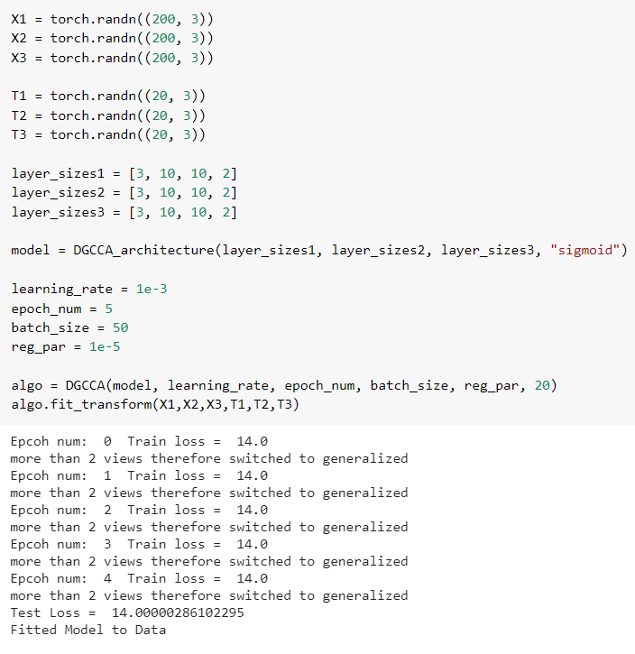

Package Name : DeepGeneralizedCCA
[Source]
DeepGeneralizedCCA.dgcca.py
Prerequisites
- python 3.6+
- pytorch 1.0+
- NumPy 1.19+
- cca-zoo 1.1.4 (Used for the implementation of GCCA)
Classes in dgcca.py file -
Class DNN : Creates a new Deep Neural Network
DeepGeneralizedCCA.dgcca.DNN(nn.Module) : (self, layer_size, activation)
Parameters :
- layer_size: list
list of size of each layer in the DNN staring from the input layer
- activation : str, default : sigmoid
The type of activation function to be used. Choose from 'relu' , 'tanh' , 'sigmoid' .
Methods :
forward(self, l)
forward propogates input tensor into the DNN and returns the output tensor (overriden)
Parameters- l : torch.Tensor (input to DNN)
Returns - torch.Tensor (output of DNN)
Class : DGCCA_architecture : Defines the architecture for 3 DNNs
DeepGeneralizedCCA.dgcca.DGCCA_architecture(nn.Module) : (self, layer_size1, layer_size2, layer_size3, activation)
Parameters :
- layer_size1 : list
list of sizes of each layer of first DNN from input to output layer.
layer_size2 : list
list of sizes of each layer of second DNN from input to output layer.
- layer_size3 : list
list of sizes of each layer of third DNN from input to output layer.
Methods :
forward(self, x1, x2, x3)
forward propogates x1 into the first DNN, x2 into the second DNN and x3 into the third DNN and returns the outputs. (overriden)
Parameters- x1 : torch.Tensor (input to first DNN)
- x2 : torch.Tensor (input to second DNN)
- x3 : torch.Tensor (input to third DNN)
Returns - torch.Tensor,torch.Tensor,torch.Tensor (output of first, second and third DNN)
Class DGCCA : Implements the DGCCA Algorithm
DeepGeneralizedCCA.dgcca.DGCCA(nn.Module) : (self, architecture, learning_rate, epoch_num, batch_size, reg_par, out_size:int)
Parameters :
- architecture : DGCCA_architecture
object of DGCCA_architecture class to define structure of the 3 DNNs.
- learning_rate: float
learning rate of the network
- epoch_num : int
How long to train the model (no of iterations to train the model)
- batch_size : int
Number of examples per minibatch.
- reg_par : float
the regularization parameter of the networks
- out_size : int
the size of the new space learned by the model (number of the new features)
Methods :
fit_transform(self, train_x1, train_x2, train_x3, test_x1, test_x2, test_x3)
Learn and apply the dimension reduction on the train data batch-wise. Trains the networks in mini-batches. Back propogates the ggca loss to tune network acc to data. Each view needs to have the same number of features as its corresponding view in the training data.
Parameters- train_x1 : torch.Tensor (Training set for first view)
- train_x2 : torch.Tensor (Training set for second view)
- train_x3 : torch.Tensor (Training set for third view)
- test_x1 : torch.Tensor (Testing set for first view)
- test_x2 : torch.Tensor (Testing set for second view)
- test_x3 : torch.Tensor (Testing set for third view)
predict(self, x1, x2, x3)
returns gcca loss and output for each of the three views
Parameters- x1 : torch.Tensor (Input for first view)
- x2 : torch.Tensor (Input for second view)
- x3 : torch.Tensor (Input for third view)
Returns - float, list (loss and list of outputs for each of the three views)
test(self, x1, x2, x3)
returns gcca loss mean and output for each of the three views.
Parameters- x1 : torch.Tensor (Input for first view)
- x2 : torch.Tensor (Input for second view)
- x3 : torch.Tensor (Input for third view)
Returns - float, list (mean of loss and list of outputs for each of the three views)
Example Using Random Data
